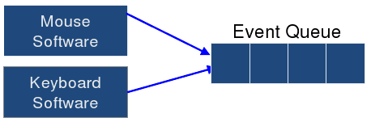

GUIs reflect the MVC architecture but are implemented as a set of widgets and must be integrated with a windowing system.
A windowing system provides an interface to the MVC, it represents the view using graphics and provides input to the controller.
There is a need to consider essential geometry in order to draw the graphics of a view and provide input to the controller.
The windowing systems provides the view with rectangular areas in which to draw on and insulates it from other applications and windows.
A window is a rectangular area on the screen which may overlap with other windows in which case the foremost window is drawn last on top of the rest.
Some windows belong to other windows and are said to be in a hierarchical structure and each window has a hierarchy of widgets which it contains.
THe window hierarchy is important as it records the window composition and depth relations, allowing the windowing system to redraw appropriately.
For example the foremost window can assume that it has a full rectangle to draw onto and not a partially covered one.
Each window has an associated widget responsible for interaction with some area of the rectangle which is the windows surface.
The widget is what invokes the view, but it is not in control of redrawing itself, that is the windowing systems job. This is because overlapping windows give need to understand where other windows are - something any one window knows nothing about - thus the windowing system can decide which windows and in turn which widgets in those windows gets rendered based on wether they are entirely covered by a overlapping window.
When a window is over another window in may mask some of the 2D surface which would normally be draw. When that foreground window is moved away revealing more of that background windows 2D surface the windowing system needs to tell that background window to redraw.
This is why every widget implements redraw(Graphics g).
An object sometimes known as a device interface.
All graphic contexts allows programmer to access a particular drawing device. This could be a printer or an image but is usually somewhere in the windowing system.
Graphics contexts define a basic set of drawing methods.
Each drawing object has a clipping region, which is used to make drawing efficient and well behaved. For example if the co-ordinates of the object to be drawn are not on the visible canvas, there is no point in drawing it.
The event must be dispatched to the correct application and window, which is the windowing systems job.
The event must be bound to some code which will deal with said event.
The widget controller used the views essential geometry
Maps lower level graphics to higher level semantics. For example is maps mouse position into some meaningful concept in the model.
Making widgets trivial and simple with a simple essential geometry it makes the concept hard to implement. Take some time to make a usefully complex widget that can be used anywhere in a simple way.
The windowing systems must dispatch to the correct application, it does this using the window tree to map mouse events to a widget.
There are three strategies:
Regardless of the dispatch method, all generated events end up on a single event queue which is maintained by the operating system. This ensures that events are handled in the order in which they occurred, additionally hiding specifics regarding the input itself from the individual applications.
Events are removed and dispatched by the operating system, but GUI designers just care about the input types which may be dispatched from this queue.
Many events have payloads which store details regarding the event.
There are a number of different approaches used to map from the event to the code.
Emphasis has shifted from efficiency to the ability to handle complexity of large applications.